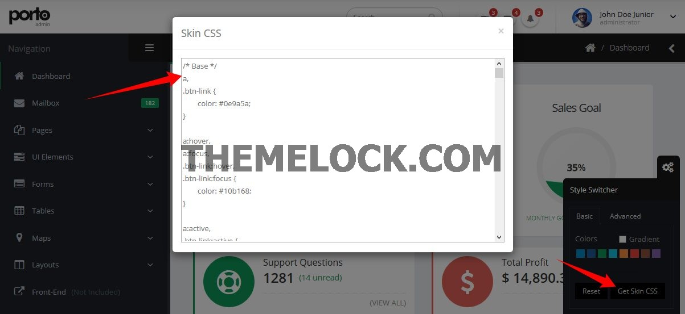
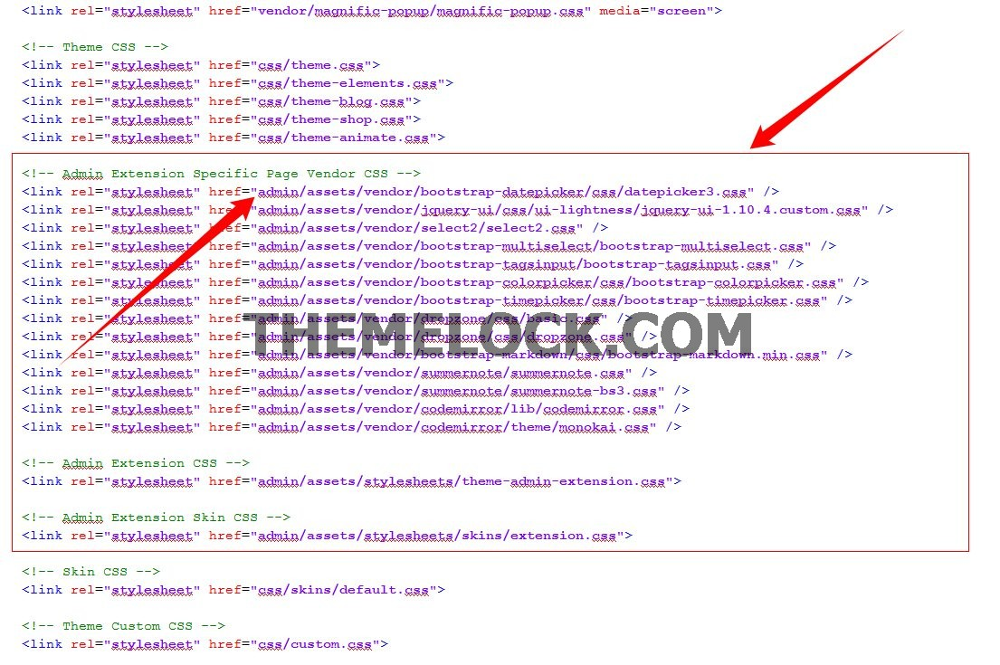
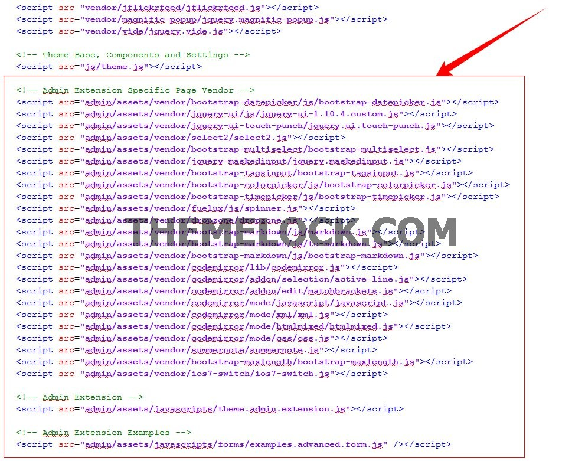
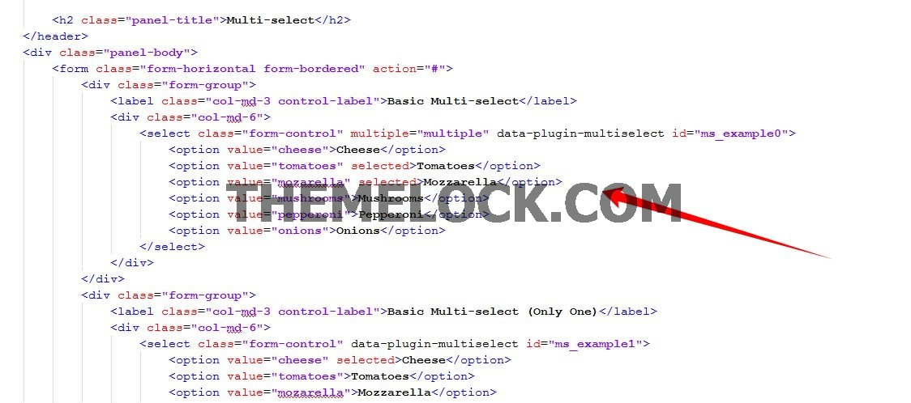
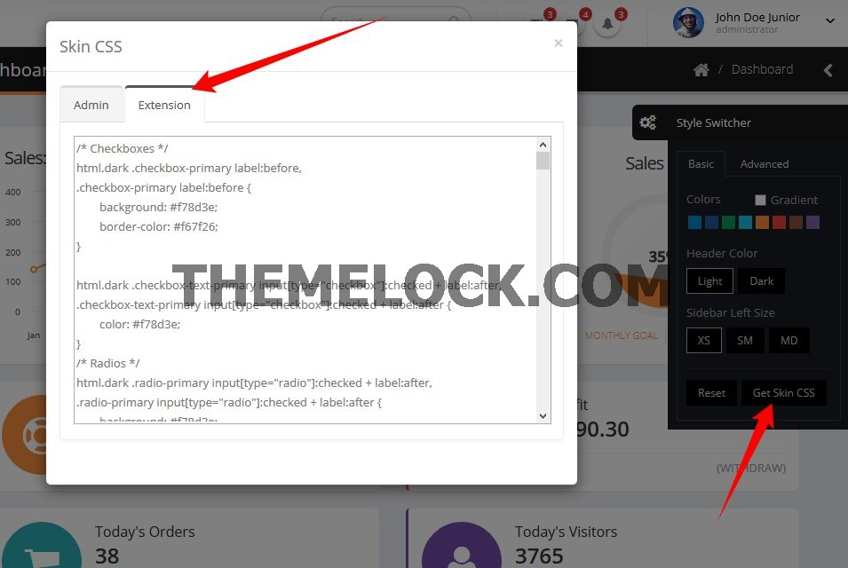

Thank you for purchasing our theme. If you have any questions that are beyond the scope of this help file, please feel free to email via our user page contact form or to our support forum at http://www.okler.net.
Most of the questions are already answered in the FAQ's:
Due to local security restrictions, some things will not work locally, especially in Chrome. But everything will work once the files have been updated to your website.
Use Firebug or Chrome Developer Tools.
Do not start from scratch, use an existing page from the demo and modify it to learn how it works.
Getting an error message? Someone might have seen it too, try a google search for a quick fix.
Explore the live demo for pages ideas and sample code.
/HTML
(Template Pages... - HTML Files)
/assets
/ajax (Ajax Files for Demo Preview only)
/images
/javascript
theme.js
theme.init.js
theme.custom.js (Customize the theme in this file)
/stylesheets
/sass (Sass sources file - you don't need to change those)
/skins
default.css (Save the skin in this file)
invoice-print.css
theme.css
theme-custom.css (Customize the thme is this file)
/vendor
(Plugins...)
The template is based on Bootstrap 3 Framework - http://getbootstrap.com
Bootstrap includes a responsive, mobile first fluid grid system that appropriately scales up to 12 columns as the device or viewport size increases.
<div class="row">
<div class="col-md-12">
Level 1 column
<div class="row">
<div class="col-md-6">Level 2</div>
<div class="col-md-6">Level 2</div>
</div>
</div>
</div>
If you need more information, please visit this site: http://getbootstrap.com/css/#grid
| Class | Description |
|---|---|
| .text-xs | Change text font-size |
| .text-sm | Change text font-size |
| .text-md | Change text font-size |
| .text-lg | Change text font-size |
| .text-xl | Change text font-size |
| .text-primary | Changes text color to the primary color |
| .text-primary-inverse | Changes text color to the primary color inverse |
| .text-dark | Changes text color to dark version |
| .text-dark-inverse | Changes text color to dark version inverse |
| .text-light | Change text weight |
| .text-normal | Change text weight |
| .text-semibold | Change text weight |
| .text-bold | Change text weight |
| .text-uppercase | Uppercase text |
| .text-lowercase | Lowercase text |
| .text-capitalize | Capitalize text |
| Class | Description |
|---|---|
| .m-none | Changes all margins to none |
| .m-auto | Changes margin to 0 auto |
| .m-xs | Changes all margins |
| .m-sm | Changes all margins |
| .m-md | Changes all margins |
| .m-lg | Changes all margins |
| .m-xl | Changes all margins |
| .m-xlg | Changes all margins |
| .mt-none | Changes margin-top to none |
| .mt-xs | Changes margin-top |
| .mt-sm | Changes margin-top |
| .mt-md | Changes margin-top |
| .mt-lg | Changes margin-top |
| .mt-xl | Changes margin-top |
| .mt-xlg | Changes margin-top |
| .mb-none | Changes margin-bottom to none |
| .mb-xs | Changes margin-bottom |
| .mb-sm | Changes margin-bottom |
| .mb-md | Changes margin-bottom |
| .mb-lg | Changes margin-bottom |
| .mb-xl | Changes margin-bottom |
| .mb-xlg | Changes margin-bottom |
| .mr-none | Changes margin-left to none |
| .ml-xs | Changes margin-left |
| .ml-sm | Changes margin-left |
| .ml-md | Changes margin-left |
| .ml-lg | Changes margin-left |
| .ml-xl | Changes margin-left |
| .ml-xlg | Changes margin-left |
| .mr-none | Changes margin-right to none |
| .mr-xs | Changes margin-right |
| .mr-sm | Changes margin-right |
| .mr-md | Changes margin-right |
| .mr-lg | Changes margin-right |
| .mr-xl | Changes margin-right |
| .mr-xlg | Changes margin-right |
| .p-none | Changes all paddings to none |
| .p-auto | Changes padding to 0 auto |
| .p-xs | Changes all paddings |
| .p-sm | Changes all paddings |
| .p-md | Changes all paddings |
| .p-lg | Changes all paddings |
| .p-xl | Changes all paddings |
| .p-xlg | Changes all paddings |
| .pt-none | Changes padding-top to none |
| .pt-xs | Changes padding-top |
| .pt-sm | Changes padding-top |
| .pt-md | Changes padding-top |
| .pt-lg | Changes padding-top |
| .pt-xl | Changes padding-top |
| .pt-xlg | Changes padding-top |
| .pb-none | Changes padding-bottom to none |
| .pb-xs | Changes padding-bottom |
| .pb-sm | Changes padding-bottom |
| .pb-md | Changes padding-bottom |
| .pb-lg | Changes padding-bottom |
| .pb-xl | Changes padding-bottom |
| .pb-xlg | Changes padding-bottom |
| .pr-none | Changes padding-left to none |
| .pl-xs | Changes padding-left |
| .pl-sm | Changes padding-left |
| .pl-md | Changes padding-left |
| .pl-lg | Changes padding-left |
| .pl-xl | Changes padding-left |
| .pl-xlg | Changes padding-left |
| .pr-none | Changes padding-right to none |
| .pr-xs | Changes padding-right |
| .pr-sm | Changes padding-right |
| .pr-md | Changes padding-right |
| .pr-lg | Changes padding-right |
| .pr-xl | Changes padding-right |
| .pr-xlg | Changes padding-right |
| Class | Description |
|---|---|
| .ib | Changes display to inline-block and set vertical-align to top |
| .va-middle | Changes vertical-align to middle |
| .bg-primary | Changes background and text color to inverse color of background |
| .bg-secondary | Changes background and text color to inverse color of background |
| .bg-tertiary | Changes background and text color to inverse color of background |
| .bg-quartenary | Changes background and text color to inverse color of background |
| .bg-success | Changes background and text color to inverse color of background |
| .bg-warning | Changes background and text color to inverse color of background |
| .bg-danger | Changes background and text color to inverse color of background |
| .bg-info | Changes background and text color to inverse color of background |
| .bg-dark | Changes background and text color to inverse color of background |
Javascript files are splited into three files.
The files are located at assets/javascripts
The file are located at assets/javascripts/theme.js
The main theme file contains:
The file are located at assets/javascripts/theme.custom.js
You can place here all of your code customization, and also extend the theme plugins.
This is the safest way to do your customizations and easily theme version without losing your modifications.
Here is an example of theme plugin that you can extend:
$.extend(theme.PluginSelect2.defaults, {
minimumResultsForSearch: -1
});
Now, by default, all of your select2 plugin will have minimumResultsForSearch set to -1 by default.
You can also extend all the other options, including methods:
$.extend(theme.PluginCodeMirror.defaults, {
beforeChange: function(instance, changeObj) {
// Your code here
}
});
The file are located at assets/javascripts/theme.init.js
This file have a collection of javascript plugin initializators
The template has three different layout modes, Default, Boxed, Scroll.
<html class="boxed">
The class can be set to: fixed (default), boxed and scroll.
You can also customize the background if you're using the boxed layout.
You can set the background color to dark, by adding the class in the HTML element:
<html class="dark">
You can set the header color to dark, by adding the class in the HTML element:
<html class="header-dark">
You can set the sidebar left site, by adding the class in the HTML element:
<html class="sidebar-left-xs">
<html class="sidebar-left-sm">
<html class="sidebar-left-md"> (Default)
The style switcher was made to support unlimited skin colors, for that we use Less (http://www.lesscss.org/) to process the CSS dinamically in the demo and show the color right away.
Generate your own skin color using the Preview on ThemeForest:

You don't need to use LESS in your project, after you done customizing your skin you may want to grab the generated code and save it in a file (assets/stylesheets/skins/default.css).
Make sure that the path to the skin file is correct (In the HTML).
Font Awesome is a @font-face iconset that you can change size and color of the icons using CSS.
If you need more information, please visit this site: http://fontawesome.io/
<i class="fa fa-edit"></i> <i class="fa fa-search"></i> ...
You can add some Animations / Transitions to the elements which fires when an element scrolls into view, it's pretty simple to use and you can add it in any element.
Usage:
<img class="appear-animation" src="..." data-appear-animation="fadeIn" data-appear-animation-delay="250">
Heads up: The Attribute data-appear-animation-delay is Optional and is set in Miliseconds.
The animation can be set to:
The Admin Extension is a package with some features from Porto Admin template that can be used in the Front-End (Porto - Responsive HTML5 Template).
- Porto - Responsive HTML5 Template comes with a few samples files, such as feature-admin-charts.html, feature-admin-forms-advanced.html, etc... with those, you can see the HTML Markup and the working pages from the preview.
- In each page you can see which CSS/JS files you need to include to get the elements working.
Steps to use the admin extension:
1) Add the CSS files for that specific page (in this example, based on feature-admin-forms-advanced.html):

(Make sure the paths for the admin match with your own structure, in this example, the path is /admin/...)
2) Add the JS files for that specific page:

(Consider to combine and compress all those files on your project)
3) That's it, now you can start to use the features from the admin as seen in the preview.

SKIN: If you want to change the color skin, don't forget to generate the extension skin file and save in the file (assets/stylesheets/skins/extension.css):

The images included in preview are for demonstration purposes and should always be replaced with your own work.
Images: http://photodune.net/
Subtle Patterns: http://subtlepatterns.com/
Fonts:
Google Fonts - http://www.google.com/webfonts
Icons Font-face - http://fontawesome.io/
Scripts:
bootstrap
bootstrap-colorpicker
bootstrap-datepicker
bootstrap-fileupload
bootstrap-markdown
bootstrap-maxlength
bootstrap-multiselect
bootstrap-tagsinput
bootstrap-timepicker
bootstrap-wizard
codemirror
dropzone
flot
flot-tooltip
font-awesome
fuelux
fullcalendar
gauge
gmaps
ios7-switch
isotope
jquery
jquery-appear
jquery-autosize
jquery-browser-mobile
jquery-cookie
jquery-datatables
jquery-datatables-bs3
jquery-easypiechart
jquery-idletimer
jquery-maskedinput
jquery-matchheight
jquery-nestable
jquery-placeholder
jquery-sparkline
jquery-ui
jquery-ui-touch-punch
jquery-validation
jqvmap
jstree
less
magnific-popup
modernizr
morris
nanoscroller
owl-carousel
pnotify
raphael
select2
snap-svg
summernote
Once again, thank you so much for purchasing this template. As I said at the beginning, I'd be glad to help you if you have any questions.